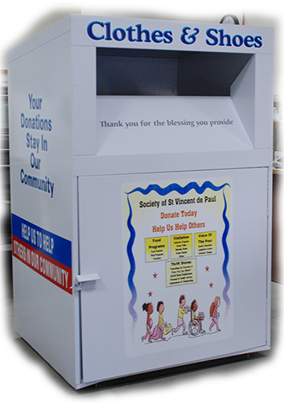

What is NYC Cloth?
NYC Cloth is a Web site organization that helps people find clothign donation bins near their home. We partner with owners of privately owned clothing donation bins throughout the NYC area. If you are interested in owning a bin or in partnering with us, please visit our feedback page. Please consider donating your old clothes today! 